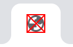

🐛 Debug view
🔄 Reload all tabs in current window
Clicks: 0
Enabled
Show freshness badge
Show a badge that goes from green to red as the page loses freshness.
Show unread badge
Show a blue badge when opening a new tab.
Minimum icon opacity:
25%
0%
100% (don't fade)
Icons will fade down to this opacity and will not fade out any further. If you set it to zero, icons will disapear.
Time to fade out to 50%:
1 minute
1 minute
16 hours
Fade is calculated according to a curve based on the
forgetting curve
.
Time to reset freshness back to 100%:
0 seconds
0 seconds
10 minutes
The faster the speed, the quicker they get to their min fade.
Expire tabs
Time to expire a tab:
Overnight
1 hour
Overnight

Reset Settings